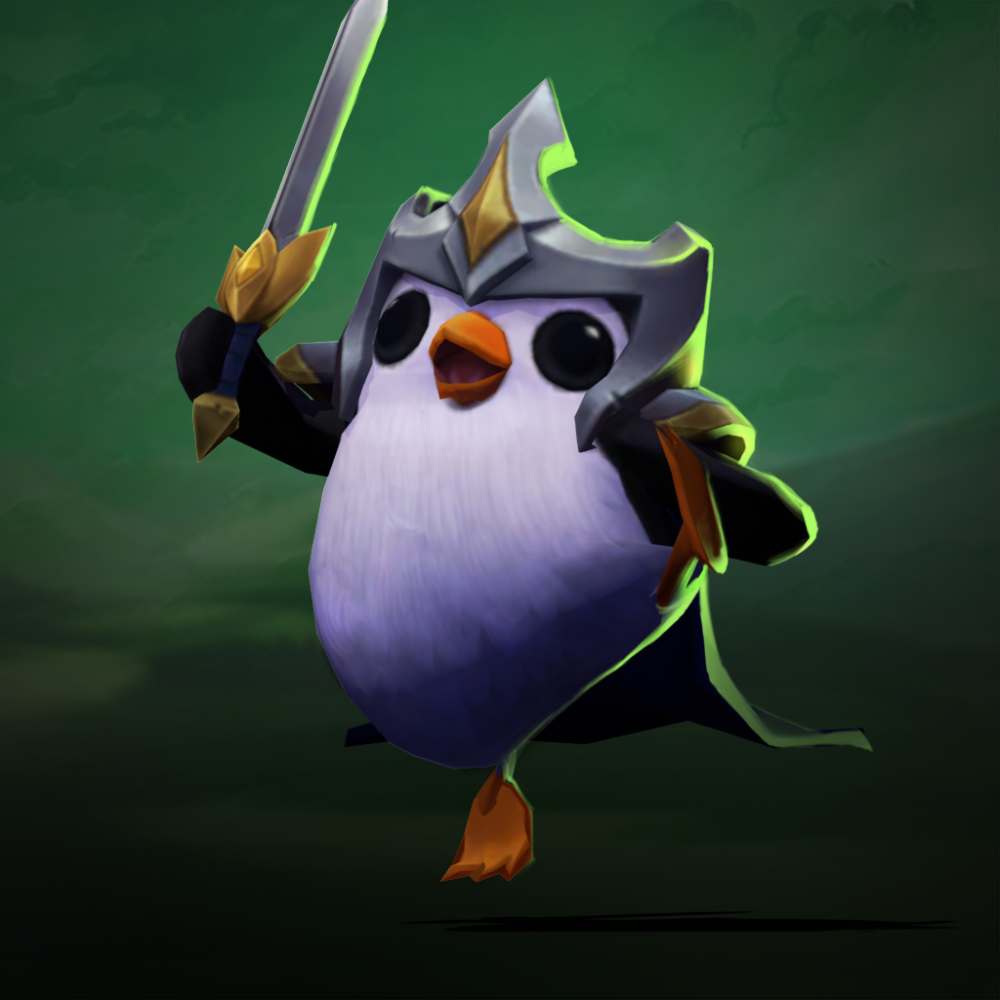
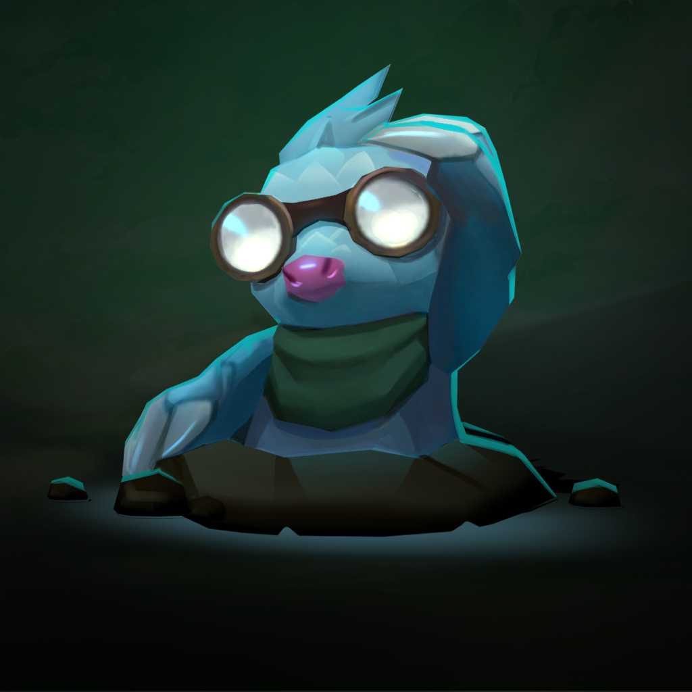

1. széria
1. széria
 3. széria
3. széria2. széria
Ezek a második szériás kis legendák
Pengulovag
A Penguk Avarosában élnek. Ezeket a vízi, röpképtelen madarakat legfőképpen a tundra régiókban látni. Jól alkalmazkodtak a vízi élethez, szárnyuk uszonnyá fejlődött. Ritkán látni lehet őket primitív eszközökkel hadonászni.
Kinézetek
 |
 |  |
Búvárvakond
A búvárvakondok kis vakond-szerű emlősök, akik alkalmazkodtak a földalatti élethez. Képesek kis eszközöket és felszereléseket használni.
Kinézetek
|  |  |
Rúnaszellem
Az Őrszemek, vagy Kő-gólemek flóra, fauna és kövek mágikus fúziója, akik Valoranban őshonosak, de találkozni lehet velük Ioniában és Shurimában is. Megjelenésük ellenére viselkedésük leginkább állatokéra hasonlít.